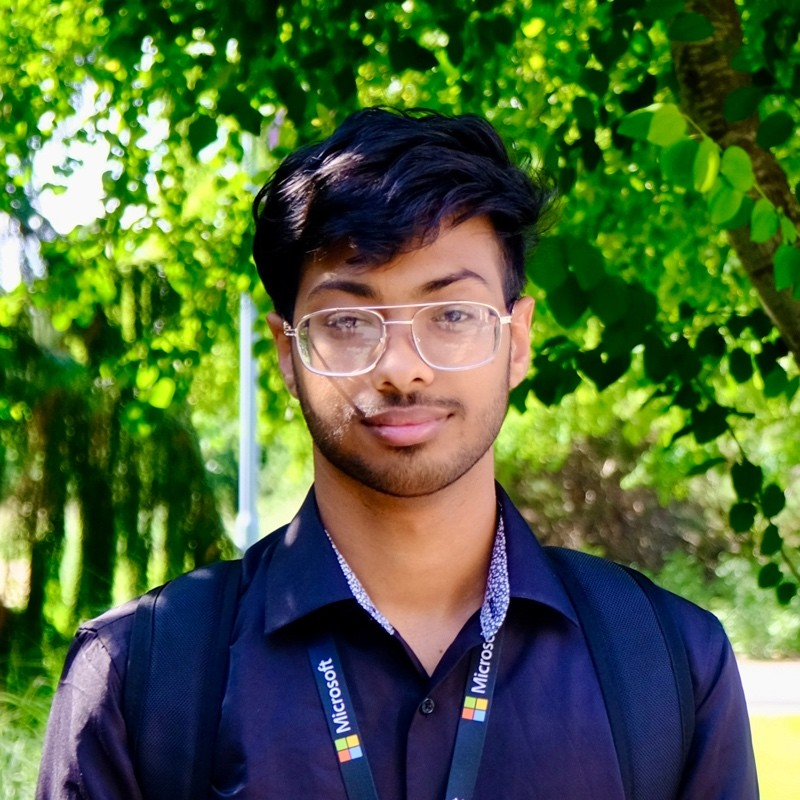

Hi, I'm Shahajalal Islam
Welcome to my personal website! I study Computer Science at the University of Washington. Feel free to explore and learn more about me and my work. I'm always open to connecting.
Welcome to my personal website! I study Computer Science at the University of Washington. Feel free to explore and learn more about me and my work. I'm always open to connecting.
As a Computer Science student at the University of Washington's Paul G. Allen School of Computer Science & Engineering, I'm driven by a passion for technology and a desire to make a positive impact.
I had the opportunity to work at Microsoft through the Discovery Program, where I explored areas such as software development, project management, and user interface/experience design. This experience helped me strengthen both my technical abilities and interpersonal skills.
I bring a strong work ethic, critical thinking, and a collaborative mindset to every project. I thrive in both team settings and independent work, always aiming for high-quality outcomes. With a commitment to continuous learning and innovation, I'm eager to grow and take on new challenges.
Built a functional physical watch using Circuit Playground and JavaScript in a hackathon, with the watch displayed on a computer screen, gaining experience in sensors, physical computing, and hardware-software integration.
Mutual Auto & Tire Services • Seattle, WA • Jun 2023 - Present
Microsoft • Redmond, WA • Jul 2024 - Aug 2024
Various Organizations • Seattle, WA • Ongoing